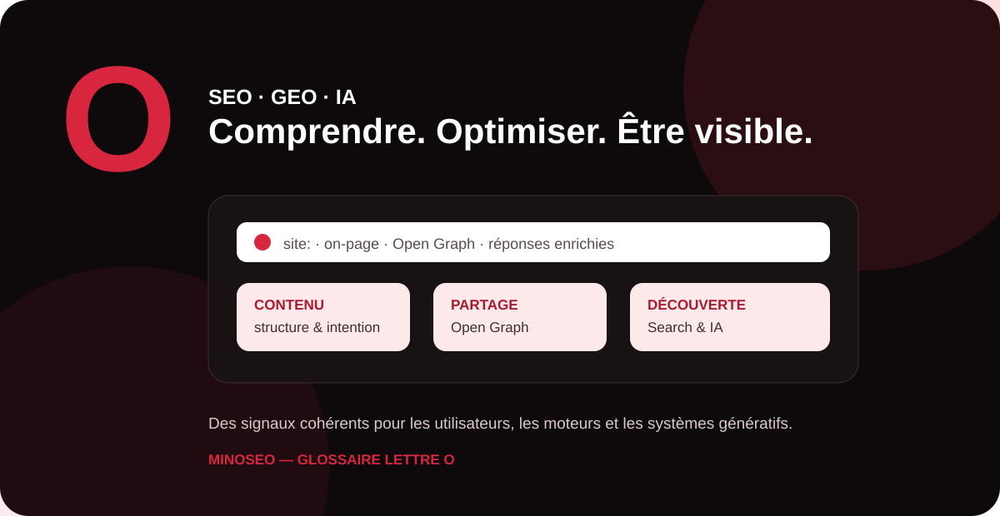

Le référencement moderne ne se limite plus à placer des mots-clés dans une page. Il faut comprendre comment les moteurs interprètent un contenu, comment une page est présentée et comment les nouveaux assistants IA accèdent à l’information. Ce guide MinoSeo explique cinq notions en O avec une approche pratique, accessible et orientée SEO/GEO.

openAI
OpenAI est une entreprise de recherche et de déploiement en intelligence artificielle, notamment connue pour ChatGPT et ses familles de modèles. Pour les professionnels du SEO et du GEO, son importance tient surtout à l’évolution des usages : une partie des internautes formule désormais ses recherches sous forme de questions conversationnelles et attend une réponse synthétique plutôt qu’une simple liste de liens.
Cette évolution renforce l’intérêt du GEO (Generative Engine Optimization). Une entreprise doit rendre son expertise compréhensible par les humains mais aussi facilement interprétable par les systèmes automatisés : informations factuelles, définitions explicites, pages bien structurées, identité de marque cohérente, auteurs ou sources identifiables et données régulièrement actualisées.
Il faut toutefois éviter une confusion fréquente : optimiser pour les environnements IA ne consiste pas à écrire artificiellement « pour un robot ». La priorité reste un contenu utile, précis, vérifiable et suffisamment clair pour qu’un système puisse correctement en extraire le sens.
Operateur de recherche google
Un opérateur de recherche Google est une commande ajoutée à une requête afin de cibler ou filtrer davantage les résultats. En SEO, ces opérateurs sont utiles pour effectuer des vérifications rapides, explorer certains contenus visibles dans Google ou rechercher des fichiers et pages spécifiques.
L’opérateur site:, par exemple, limite les résultats à un domaine, une URL ou un préfixe d’URL. filetype: permet de rechercher certains types de fichiers. Google documente également des opérateurs propres à la recherche d’images, comme imagesize: ou src:.
Ces commandes sont pratiques pour le diagnostic, mais elles ont des limites. Une requête site: ne constitue pas un inventaire exhaustif de toutes les URL indexées. Pour vérifier précisément l’état d’une URL, l’outil d’inspection d’URL de Google Search Console est plus fiable.
| Opérateur | Exemple d’usage SEO | Limite |
|---|---|---|
site: | Explorer les résultats associés à un domaine ou répertoire | Liste non exhaustive des URL indexées |
filetype: | Rechercher certains formats de fichiers | Dépend des résultats disponibles dans Google |
imagesize: | Rechercher des images selon une dimension | Réservé à Google Images |
Optimisation on page
L’optimisation on-page regroupe les améliorations effectuées directement sur une page afin de faciliter sa compréhension par les utilisateurs et les moteurs. Elle concerne notamment le contenu, le titre HTML, le H1, les sous-titres, les liens internes, les images, la structure sémantique et certains éléments techniques.
Une bonne optimisation commence par l’intention de recherche. La page doit apporter la réponse attendue, avec une structure claire et un niveau de détail adapté. Le titre doit décrire précisément le contenu ; les H2 doivent organiser les sous-thèmes ; les liens internes doivent orienter vers des ressources complémentaires ; les images doivent avoir une fonction utile et être correctement intégrées.
La meta description mérite aussi une attention particulière. Elle n’est pas une garantie du texte affiché dans Google : le moteur peut construire l’extrait à partir du contenu de la page lorsqu’il estime ce passage plus pertinent pour la requête. Il est donc essentiel que la page elle-même soit descriptive, cohérente et lisible.
Open Graph SEO
Open Graph est un protocole de métadonnées permettant de décrire une page lorsqu’elle est partagée dans des environnements compatibles, notamment sur les plateformes sociales. Les propriétés courantes incluent og:title, og:type, og:image et og:url.
Open Graph n’est pas, à lui seul, un mécanisme de classement SEO. Son intérêt principal est de maîtriser la présentation d’un contenu lors du partage : titre plus clair, image attractive, URL de référence et informations cohérentes. Une meilleure présentation peut favoriser la visibilité et le clic lorsque le contenu circule sur les réseaux ou dans des outils qui exploitent ces métadonnées.
Il existe néanmoins un lien indirect avec l’écosystème de recherche : Google indique que og:title peut faire partie des sources utilisées pour générer un lien de titre dans ses résultats. Cela ne signifie pas que Google affichera systématiquement ce champ. Il est donc préférable de maintenir une cohérence entre le <title>, le H1, og:title et le sujet réel de la page.
Onebox Google
Le terme OneBox Google est couramment utilisé dans l’écosystème SEO pour désigner certains blocs de réponse ou modules enrichis que Google peut afficher directement dans la page de résultats, en complément des liens organiques classiques. Leur apparence dépend de la requête : information immédiate, données spécialisées ou module issu d’une fonctionnalité de recherche.
Il ne faut pas confondre ce terme avec toutes les fonctionnalités enrichies de Google. Les pages de résultats évoluent régulièrement et Google documente aujourd’hui de nombreuses apparences distinctes : extraits, résultats enrichis, images, vidéos, fiches d’établissement, featured snippets et autres fonctionnalités.
Pour une marque, l’objectif n’est donc pas de « forcer une OneBox », mais de rendre les informations fiables, structurées et directement compréhensibles. Selon le type de contenu, cela peut passer par une réponse concise dans la page, des données structurées admissibles, une architecture claire et une information factuelle cohérente sur l’ensemble du site.
Comment relier ces notions dans une stratégie SEO et GEO ?
Ces cinq notions illustrent les différents niveaux de la visibilité numérique. OpenAI représente l’essor des interfaces génératives ; les opérateurs Google facilitent certains diagnostics ; l’optimisation on-page améliore la qualité et la compréhension d’une page ; Open Graph soigne sa présentation lors du partage ; et les modules comme les OneBox rappellent que la SERP ne se limite plus aux dix liens bleus traditionnels.
| Notion | Rôle principal | Priorité SEO/GEO |
|---|---|---|
| OpenAI | Écosystème d’IA générative et conversationnelle | Produire des informations claires, factuelles et vérifiables |
| Opérateur Google | Affiner une recherche ou réaliser un diagnostic rapide | Ne pas le substituer aux outils Search Console |
| Optimisation on-page | Améliorer contenu, structure et signaux d’une page | Aligner intention, contenu, HTML et maillage |
| Open Graph | Contrôler la présentation lors du partage | Assurer la cohérence des titres, URL et visuels |
| OneBox Google | Bloc ou module directement intégré aux résultats | Structurer l’information sans promettre un affichage |
Une stratégie moderne combine donc SEO technique, contenu utile, structuration sémantique et préparation aux moteurs génératifs. MinoSeo accompagne les entreprises dans cette transition afin que leurs pages soient à la fois accessibles, compréhensibles et compétitives sur les différents parcours de recherche.
Préparez votre visibilité pour Google et les moteurs IA
Faites auditer vos pages, leur structure et leurs signaux SEO/GEO pour identifier les optimisations prioritaires.
Demander un audit gratuit